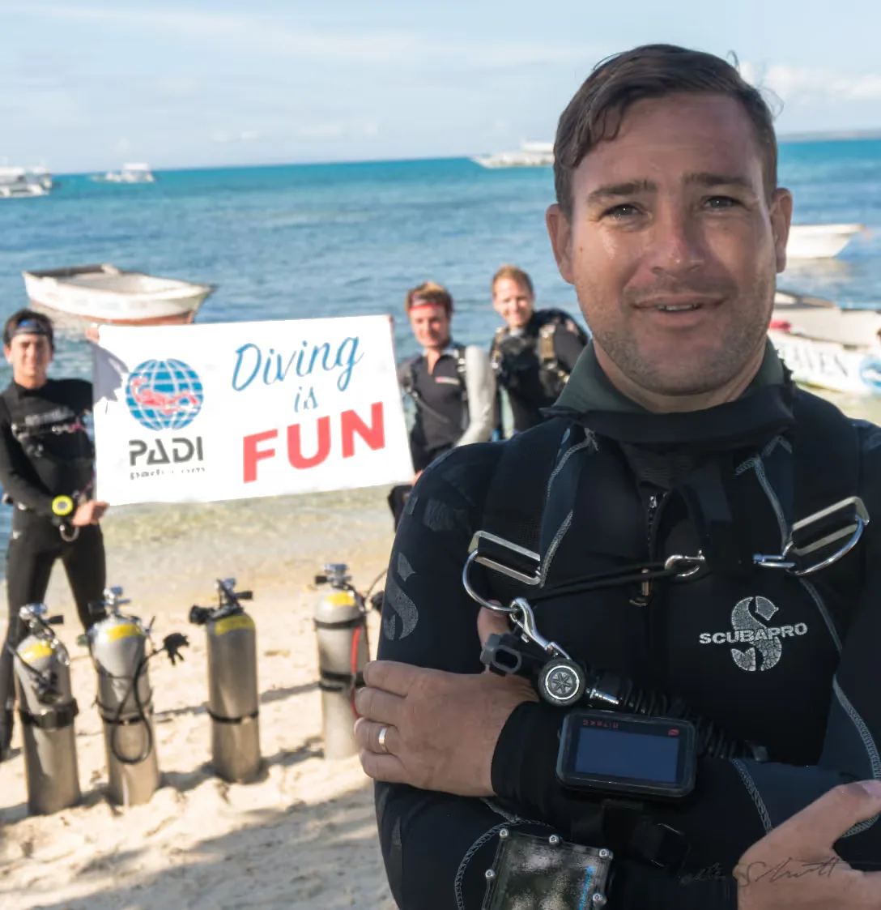

Walter is an incredible dive instructor.
Taylor MMarch 2025 · Tripadvisor
Hear from the people who’ve dived and trained with Devocean.
Excerpts from Tripadvisor reviews of Devocean Divers Playa del Carmen.
Walter is an incredible dive instructor.
The experience with Walter was just wonderful.
They made every detail seamless…
Nine stories from Walter’s students.
Instructor and Divemaster training in Mexico, India and the Philippines. Read every story in full below.
Sean describes a varied instructor course, with practical workshops and individual support.
“The idc with Walter at gopro is a intensive and emmersive learning experience. I got to do really interesting work shops including diving a cenote, visiting and exploring a hyperbaric chamber, learning the basics of of regulators and other equipment servicing. The class was informative and really prepared me for the instructors exam. Everyone in my idc group smashed through it with ease and we all passed. This was possible because the course director walter that taught the class is not only very knowledgeable from a life time of diving. He is truly passionate about diving and his students. He was always willing to take extra time when you needed it and they helped me find accommodations as I traveled from the USA for the course. I would highly recommend this class and this instructor."
Winston highlights Walter’s patience, calm teaching and Dorianne’s help with logistics.
“It’s rare to find an IDC and course director as exceptional as Walter Schmit. From the onset, what struck me the most was his unparalleled patience. No matter how trying the situations were during the course, Walter’s calm demeanor never wavered. A fellow candidate and I often found ourselves marveling at Walter’s incredible aptitude for handling challenging situations that arose.Unforeseen logistical hurdles cropped up throughout our journey, all of which were outside Walter’s control. Yet, he approached each obstacle with grace, always formulating a backup plan, ensuring that the course ran smoothly and productively.Prior to this course, I had certifications from several other agencies besides PADI. Frankly, I was skeptical about the PADI system, primarily choosing it because of its global recognition and job prospects. However, Walter transformed my perspective. His methodical teaching approach, which is a product of significant effort and thought, has deepened my respect for PADI’s teaching system. Walter’s vast collection of resources, accumulated over the years, and his dedication to continuously improve by observing other course directors is commendable.Furthermore, Walter’s expertise as a diver, especially in technical diving realms like closed circuit rebreathers and cave diving, elevates his teaching. I particularly enjoyed his effort to organize a Q&A with a local cave explorer. He ensured that we never relied on easy answers but instead engaged in a systematic approach to tap into our resources. This method not only honed our skills but also instilled in us the confidence to excel as instructors.Complementing Walter’s stellar teaching was the support provided by his wife, Dorianne. Her assistance in securing affordable housing and providing invaluable advice on city services was a godsend. Choosing this IDC was a decision made largely based on scheduling convenience. However, thanks to the combined efforts of Walter and Dorianne, I believe I received the best possible experience.In conclusion, Walter Schmit as a Course Director is an invaluable asset. I wholeheartedly recommend his IDC to aspiring instructors. The knowledge, skills, and experience he imparts are truly unparalleled. Thank you again! – Winston"
Victoria describes feeling supported from the first conversation through her Divemaster training.
“ Desde el primer contacto, cuando yo los contacte para el motivo de tomar el curso de Divemaster, superaron todos mis expectativas. El director de Cursos, Walter, me llamo personalmente para hablar sobre los detalles antes que llegara a Mexico. Dorianne me ayudó con recomendaciones sobre alojamiento y entre los dos, aún antes de llegar ahí, me sentí cuidada.Luego cuando llegue y empecé mi curso, me sentí segura abajo y afuera del agua con el equipo de el base. Los instructores, divemasters, marineros, y capitanes de el barco, son excelentes. Estoy muy agradecida por el esfuerzo, energía positiva, y todo que me ensañaron. Me fue tan bien, que extendí mi quedada para poder hacer cursos de especialidades.El buceo es precioso. Vida de todos tipos, buen visibilidad, arrecifes, y también un naufragio. Hice también buceo en los cenotes por la primera vez con ellos! Tienen buceo para cada nivel de buzo, desde bautismo hasta los con mucho experiencia.Un placer y no puedo esperar hasta que puedo regresar."Manque values the professional perspective Walter brought to instructor development.
“Increíble el IDC con Walter en Playa del carmen !! durante el transcurso fui aprendiendo realmente el enfoque y acción que un profesional PADI debe tener para con el mundo del buceo hasta en los más minuciosos detalles; el Course Director tiene una experiencia invaluable de muchos años de trabajo en los sitios más llamativos e interesantes del mundo para un profesional del buceo, y las comparte abiertamente, dando todos los puntos de vistas de múltiples aspectos del día a día, lo que realmente te da un panorama amplio para pensar de manera correcta en el desarrollo de tu carrera.Fue un enorme placer haber sido su alumno y haber completado la IE sin ningún problema gracias a su tutela.."Gonzalo describes a demanding, supportive course that changed his approach to teaching.
“Estimados amigos, Quiero compartir mi experiencia inolvidable durante el curso de buceo PADI IDC con Walter Schmit . Nuestro instructor, Walter, un apasionado instructor, argentino con experiencia global, nos llevó a un viaje emocionante a través de las profundidades de los oceanos por todo el mundo, contándonos historias detalladas que ilustraban el negocio del buceo de manera cautivadora. A medida que pasaban los dias , el vínculo de amistad en nuestro grupo creció, lo que contribuyó enormemente a nuestro desarrollo en el curso.Walter, con su dedicación incansable, nos instó a cumplir los estándares PADI con una intensidad que nos desafió a superarnos a nosotros mismos. Al comienzo del curso, llegué creyendo que era un buzo experimentado, pero al finalizar, me di cuenta de que había mucho más por aprender de la enseñanza y el enfoque necesario para ser un gran instructor.Hoy, me despidiendo de este maravilloso curso, me siento agradecido por la experiencia transformadora que he vivido. Quiero expresar mi sincero agradecimiento a todos mis compares por brindarme esta oportunidad única, y especialmente a Walter por su excepcional trabajo como instructor y course director PADI. Sé que soy un buzo con un horizonte lleno de emocionantes aventuras por descubrir, y eso es un regalo invaluable.Con gratitud y emoción,Gonzalo Arnillas"Priyamvada credits practical workshops and detailed feedback with helping her teach confidently.
“I would like to take this opportunity to thank Course Director Mr. Walter Schmit for his stellar and extremely involved IDC program, which concluded with a successful Instructor Exam on 30th Jan, this year. Walter went above and beyond teaching us how to think and act as prudent PADI instructors. He was extremely encouraging throughout. He would tirelessly conduct engaging workshops nearly every day of the IDC right from 7 am to 8 pm. The dry runs prior to in-water sessions specifically helped us organise concepts very effectively. He would patiently debrief us with respect to every activity and the improvement in our teaching approach was evident every single day. Apart from the fact that all of us cleared our IE in the first attempt, we also had a lot to learn from Walter's years of experience and expertise in training divers of every level.I just certified my first Open Water course yesterday and the teaching methods and tricks taught by Walter proved to be extremely effective! Resulting in my student (Shriditha Gambhira) being extremely comfortable in water and wanting to pursue continuing education programs over the next month. Overall, I feel extremely grateful for doing my IDC under Walter and I can't imagine having done it under any other Course Director! Thanks a lot for letting me share this feedback! Best regards,Priyamvada"
Amy recommends Walter’s individual attention and broad experience as an instructor.
“I had such a great time training with Walter. He’s incredibly professional and brings a lot to his work. He has many years of experience in the industry which allows him to bring a lot of different and inventive techniques into his training; choosing the best of what he has seen and tried throughout the years. He commands respect and maintains strict control over whomever he is teaching, whilst also managing to be friendly and not take himself too seriously. He is incredibly passionate about his work and follows the PADI standards to the letter, which is one of the major things that attracted me to learn with him in the first place. Why train with someone if they don’t have respect for the certifying organisation? He takes the time with each and every student to make sure that they have all the information that they need and brings in extra guidance from his experience.I can really recommend Walter if you’re looking for someone to work really hard with and who will use all his skills and expertise to get the best out of you. He is in the business due to his passion for diving and he aspires to create great divers.Amy, Arnold PADI MSDT #485300 16th March 2020"
Patricia describes gaining confidence through preparation and patient coaching.
I’d like to share feedback for my IDC with Walter Schmit. In short, I’m so thankful that I chose him as my Course Director at Devocean Divers. I initially connected with Walter with my interest in joining an IDC and becoming an instructor, but also explained my apprehension due to my poor Divemaster training. After further talking with him and the Devocean manager, Dorianne Cuenoud, I gained trust that they could sufficiently coach me through the IDC and IE. Sure enough, they let me come to Malapascua a couple weeks early so that Walter could first fill the gaps from my previous training. From there, we went straight into the IDC Prep, EFRI and the IDC itself. It was a VERY intense few weeks for me, especially given my background. However, Walter went above and beyond in providing the knowledge and support to ensure that I would succeed. He led a fantastic and well-organized IDC, along with his Staff Instructor candidate Albert Duran Blanch, and fostered a cohesive group of seven who supported and learned from one another. By the time the IE came around in mid-February, I was armed with confidence and the skills needed, and passed to become certified as a PADI OWSI. Walter leaves the lasting impression of being the type of instructor in which I aspire to be as I start my career. He is deeply knowledgeable, excited to share that knowledge with his students, incredibly patient, and will not sugarcoat the truth when providing guidance; he is dedicated to seeing his students succeed. I can’t thank him and the team at Devocean enough, for an experience that truly changed my life. Patricia BorjaOWSI #44440618th April 2020
Henrik remembers a welcoming team and five weeks of professional and technical training.
“Walter and Devocean provides dive experiences for life ...Last week I came home after spending 5 weeks with Devocean at the very remote and wonderful Malapascua Island.I did my IDC with in-house Course Director Walter Schmit and I also did Tech40, TechSidemount and the Dive Propulsion Vehicle speciality with him..These weeks have become some of the most treasured time of my life and will stand out in my memory for a very very long time. Walter was super professional, capable and caring and turned out to be a good friend as well.During my time with Devocean I've met all the instructors and seen them all in acttion. They are all very professional and highly capable of what they do, extending hospitality and friendliness in a very high degree, which characterizes all of the Devocean staff.The DIvemasters at Devocean are also very professional, humoristic and handsome guys that will go a long long way to satisfy the customers in their underwater adventures, extending courtesy and safety to everyone. Also the girls in the office are always offering a beautiful smile and are very helpful with anything you might need.Last but not least there is the sweet and beautiful manager Dorianne, that would turn herself inside out to make every experience for any customer the best dive experience of their life.It is easily seen that Devocean is not only a dive shop that is doing an excellent job, but it is a big dive family that works well together in providing the customers with big satisfaction and memorable dive experiences for life.So if you're a diver or you're planning to become one, then when visiting Malapascua make sure you go see Devocean and meet the team, check out their good offers and enjoy the amazing diving with the most capable, caring and devoted dive team on the island. And after that you can enjoy yourself contemplating your dives over a local beer in the bar among new friends on the beach during sunset. An amazing experience I myself enjoyed 5 weeks in a row and I will never forget it.Date of experience: June 2019"
These historical training stories were published on Devocean’s website. Programmes, locations and original wording are retained; they are separate from the Playa del Carmen Tripadvisor rating above.
Have dates in mind? A place you’d love to explore? Tell us a little, and we’ll help you find the right experience.

We may be underwater when you get in touch. We’ll reply when we’re back.